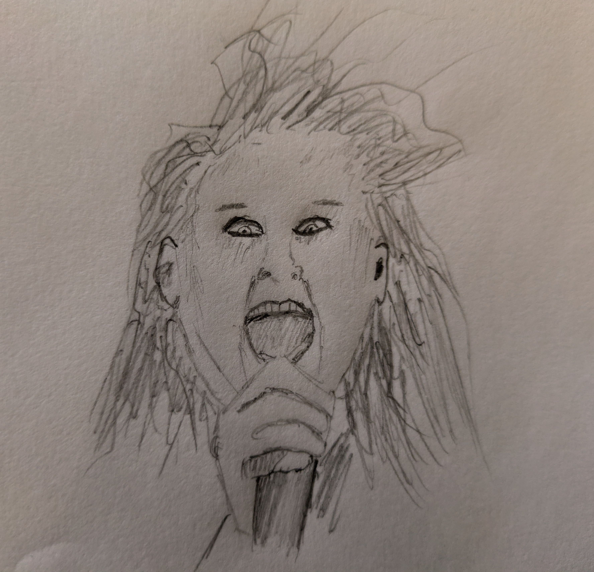

Farewell to the Prince of Darkness
On the 22nd of this month, Ozzy Osbourne died at home, surrounded by his family. He got 76 years, which is a pretty good run for a guy who used to bite the heads off animals while performing heavy metal music off his tits on coke. If I sound irreverent, please excuse me. I’m more impressed than anything.
Ozzy had a special place in my life. When I was a kid, old rock and metal was the soundtrack of the family home. My mother had been an ’80s rocker and my stepdad (who joined the family when I was 11) was a die-hard classic metalhead. My earliest introductions to the power of music came from listening to bands like Black Sabbath and Judas Priest. Ozzy was always a favourite. In particular, his track Bark at the Moon from the 1983 album of the same name did something indescribable to my preteen brain.
I’ve revisited that song many times in recent days, given the news. Its power over me has not diminished, not in the slightest. The guitar intro still immediately shifts my brain into gear, ready to stand and shout and headbang. The chorus makes me miss having long hair and a leather jacket. My favourite bit of the song, though, is the bass line. This might just be because I played bass as a teenager, but a well-executed bass line is still the thing that makes a great song for me. This track has that, an unpretentious thumping rhythm that provides structure to the song and gives the lead guitar plenty of room to do its flashy stuff in between Ozzy’s vocals. At the risk of sounding like a guy who has hair as grey as I do, they don’t make ’em like this anymore.
I suspect I’ll be listening to a lot of Ozzy in the near future, as well as plenty of Black Sabbath. I might take this as a prompt to revisit a lot of the music I grew up on, see how it feels now compared to when I was a kid. Judging by how good it felt to listen to Bark at the Moon a couple of times a day over the past few days, I think it’ll be worthwhile.
Farewell, Ozzy, and thank you.

Also sorry for this crappy drawing.
--Antony F.